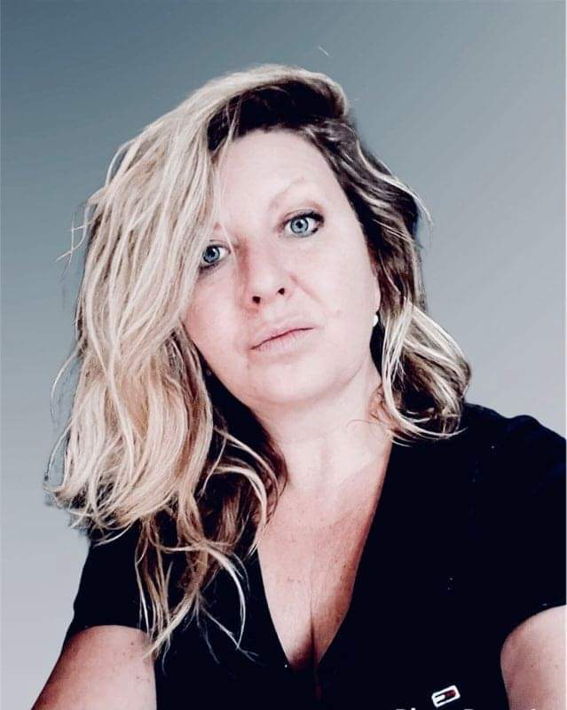

Martina Štolbová
- 2006-2009 Metropolitní univerzita Mezinárodní vztahy a evropská studia -Bc.
- 2009-2011 Metropolitní univerzita Mezinárodní vztahy a evropská studia - Mgr.
Vzdělání
- 2005 - současnost - Asistenka provozu v německé firmě Progroup AG
- 2011 - 2015 Tajemnice komise programů Zelená úsporám - Státní fond životního prostředí ČR
- 2008 - 2011 Referentka na reklamačním oddělení v zákaznickém centru logistické firmy Geis s.r.o.
Pracovní zkušenosti
- Německý jazyk
- Anglický jazyk
- Organizační schopnosti
- Kreativita
- Komunikační schopnosti